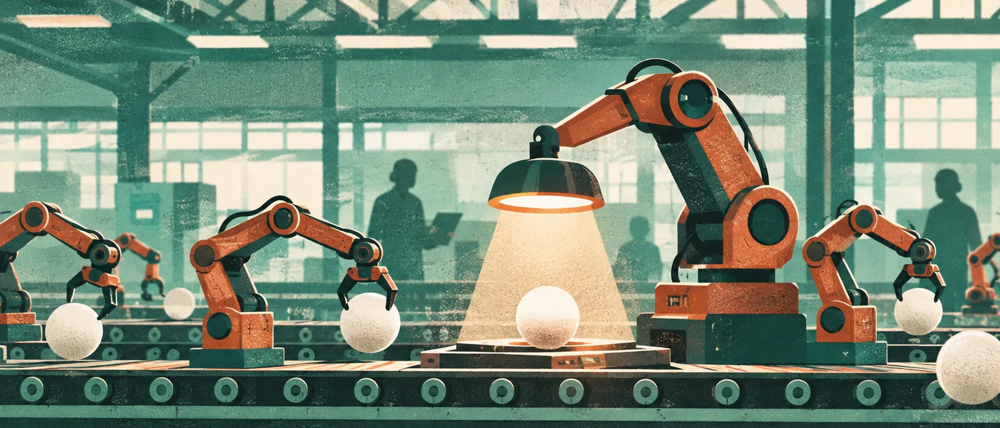

AI 인사이트 · 해설
에이전트 팀의 증명은 무엇을 검사했나
소식 · 원문 발표 2026-11-13 · 사이트 수록 2026-11-16 · 해설 본문 예상 읽기 약 4분
수학 증명은 문장이 그럴듯한지보다 각 논리 단계가 이어지는지가 중요합니다. Google Research가 11월 13일 공개한 Antigravity의 /teamwork 결과는 이 차이를 에이전트 협업에 적용합니다. 여러 에이전트가 답을 제안하게 하는 데서 그치지 않고, 생산자의 추론을 이어받지 않은 반증자와 기계 검사기를 따로 둡니다. Google이 설명한 변화는 에이전트 수를 늘리는 일만이 아니라, 후보를 만드는 과정과 후보가 틀렸는지 검사하는 과정을 나누는 데 있습니다.
검사 방식은 작업마다 달랐습니다. 수학에서는 Lean 4 정리 증명기가 형식화된 증명의 논리 단계를 확인했습니다. 소프트웨어에서는 기존 테스트 스위트와 실행 시뮬레이터를, 시스템 작업에서는 하드웨어 카운터를 사용했습니다. 웹 검색은 근거를 찾는 도구로 포함됐습니다. 에이전트들이 서로의 답을 읽고 동의하는 것과, 별도의 검사기가 정해진 조건에 따라 결과를 확인하는 것은 같은 수준의 검증이 아닙니다. 전문 에이전트에게는 각 단계에 필요한 파일과 도구를 주고, 코디네이터는 다음 작업을 새 에이전트에 넘깁니다. critic과 auditor도 생산자의 추론을 이어받지 않은 문맥에서 결과를 살핍니다. 이 분리는 앞선 판단에 끌릴 가능성을 줄이지만, 문제를 어떻게 골랐고 형식화한 문장이 원래 질문과 같은지는 따로 확인해야 합니다.
Courtade–Kumar 추측 사례에서 CUHK 연구팀은 문제를 14변수 최적화로 줄이고 하한을 제시했습니다. Gemini 4 Argon은 매개변수 공간을 나눠 해석적 하한과 구간 산술 인증서를 만들었고, 전체 증명을 Lean 4로 형식화해 5천만 줄을 생성했습니다. 핵심은 줄 수가 아니라 형식화된 증명이 Lean 검사기를 통과했다는 점입니다. 검사기가 확인한 것은 입력된 형식 정리의 증명입니다. 그 정리가 원래 추측과 정확히 맞는지, 축약 과정이 타당한지는 별도의 수학적 판단이 필요합니다.
Google이 공개한 다른 결과도 같은 구분을 요구합니다. /teamwork-LEAP는 Weil 추측의 기계 검사 형식화를 약 180만 줄 Lean으로 만들었고, 힐베르트 10번 문제 형식화는 91만 9천 줄을 넘었습니다. 화학 작업에서는 30개 전문 에이전트의 자기수정 루프로 NMR 스펙트럼에서 분자 구조를 정해 top-1 정확도 95%, top-3 정확도 100%를 보고했습니다. 시스템 소프트웨어 작업에서는 Zircon 마이크로커널의 C++ 약 80만 줄을 Rust로 옮겨 커널 단위 테스트를 통과하고 arm64에서 부팅했습니다. libgav1의 Rust 이식은 bit-exact 100%를 확인했고, 설정된 프로파일링과 속도 목표 아래 원본보다 20~30% 빨랐다고 합니다. 이 수치들은 Google의 자체 보고에 담긴 결과입니다. 결과마다 외부 재현과 동료심사 수준이 다르므로, 같은 검증 상태로 묶어 읽을 수는 없습니다.
따라서 “에이전트가 사람 없이 연구를 끝냈다”는 결론은 이 발표가 뒷받침하지 않습니다. Google은 모든 작업이 인간 전문가와의 협업이었다고 밝혔습니다. 문제를 세우고, 형식 정리가 원래 질문과 같은지 확인하고, 결과를 편집하는 일은 사람에게 남습니다. STOC 2027 제출자 가운데 Deep Review 피드백을 선택한 578편은 전체의 3분의 1 이상입니다. 그러나 진행 중인 설문은 응답자 70명의 자기보고입니다. 30% 이상이 중요한 증명 오류나 수학적 오타를 발견했다고 답한 결과를 전체 제출자의 비율로 일반화할 수는 없습니다.
여기서 팀워크가 바꾸는 것은 후보를 내는 수뿐 아니라 검증이 맡는 위치입니다. 생산자와 반증자의 문맥을 분리하고 결과를 기계가 검사할 형식으로 옮기면, 어떤 단계가 검증됐는지 더 선명해집니다. 다만 그 검사가 유효하려면 사람이 문제 진술과 형식화 사이의 연결을 확인해야 합니다. 기계는 주어진 형식 안의 논리를 검사할 수 있지만, 어떤 질문에 답해야 하는지까지 정해 주지는 않습니다.